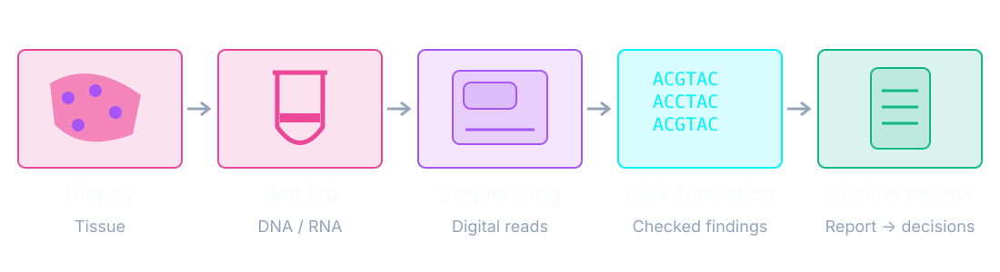
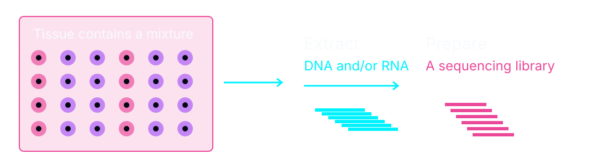
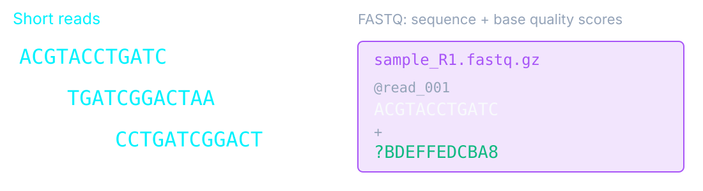
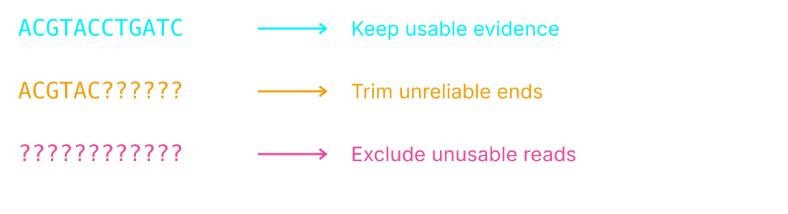
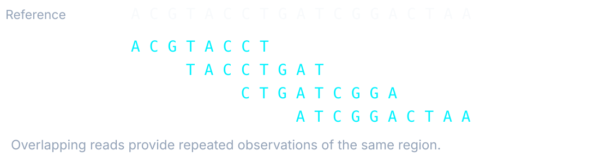
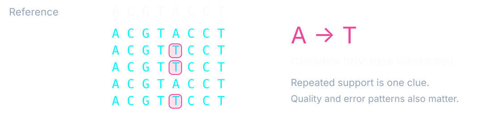

The wet lab makes the measurements. Bioinformatics makes those measurements usable.One
specimen, several kinds of expertise.
Molecular biology
Handle the specimen and prepare DNA/RNA.
Make a library, sequence it, and assess laboratory quality.
Bioinformatics
Process the files and assess data quality.
Find changes, attach context, and keep the analysis reproducible.
Clinical interpretation
Review findings alongside tissue and clinical information.
Pathologists and the treating team use the report to support decisions.
Shared work: Investigate unexpected results, resolve quality problems, and agree what can be
reported.

What enters the process
Selected tissue → extracted DNA/RNA → prepared fragments.
Why it matters later
Too little tumour or damaged material can hide a real change.

FASTQ: nucleotide sequence + a quality score for each base call.The sequencer’s signals are
converted and
assigned to samples before these files reach analysis.
QC &
read filtering → Map reads
to a reference → Detect
changes → Annotate
& prioritise → Review
& report
read filtering → Map reads
to a reference → Detect
changes → Annotate
& prioritise → Review
& report
Detection branches · selected for the test’s purpose
SNVs / short indels
Extra or missing copies
Joined genes
Standardised within a validated test, not identical for every question.Quality checks and
filtering occur at several stages.

Read quality
Are the base calls reliable?
Coverage
Was each target read enough times?
Sample checks
Is there evidence of contamination or a mix-up?
A failed region may need a repeat test or a clear limitation in the report.

The analogy
Put short excerpts back onto the right page of a book.
The practical result
An alignment file (BAM/CRAM) records where reads fit.
Some reads fit several places. Mapping uncertainty affects later findings.

Variant calling: decide which differences have enough reliable evidence to become candidate
findings.
Candidate
change → Which
gene? → What effect
on its product? → What evidence
is available?
change → Which
gene? → What effect
on its product? → What evidence
is available?
A simplified example
Missense variant → amino acid substitution → published evidence to review.
Prioritisation and filtering
Set aside artefacts and assess relevance to the clinical question.
Annotation adds information; it does not establish a diagnosis.Some findings remain
uncertain.
Illustrative commands and identifiers throughout these four slides; no patient data or live job.
A sample sheet is the link between the specimen ID and the correct sequencing
files.
Use approved infrastructure and access controls. The original data remain available
after transfer.
# Ask the scheduler to run the job
$ sbatch run-panel.sh
Submitted batch job 8421
$ squeue -u "$USER"
JOBID NAME STATE
8421 panel RUNNING# Inside the prepared job script
nextflow run /pipelines/panel/1.0/main.nf \
--input samples.csv \
-with-report execution.html \
-with-trace tasks.tsvQC→Mapping→Analysis
branches→Annotated results
The scheduler allocates resources; the workflow engine coordinates the
analysis steps.A completed computer job still needs quality review.
Temporary compute space is not the archive. Keep reviewed releases distinct from
working results.
“No relevant change detected” does not mean “no cancer” or “every possible change
excluded”.
Checks
Is the available evidence good enough?
Finds
Which kinds of change does this test support?
Explains
What is known, and what remains uncertain?
The final handoff is a reviewed finding with context and limits.
Overview & discussion
Select a topic to revisit it. Press N on a slide for presenter notes and sources.